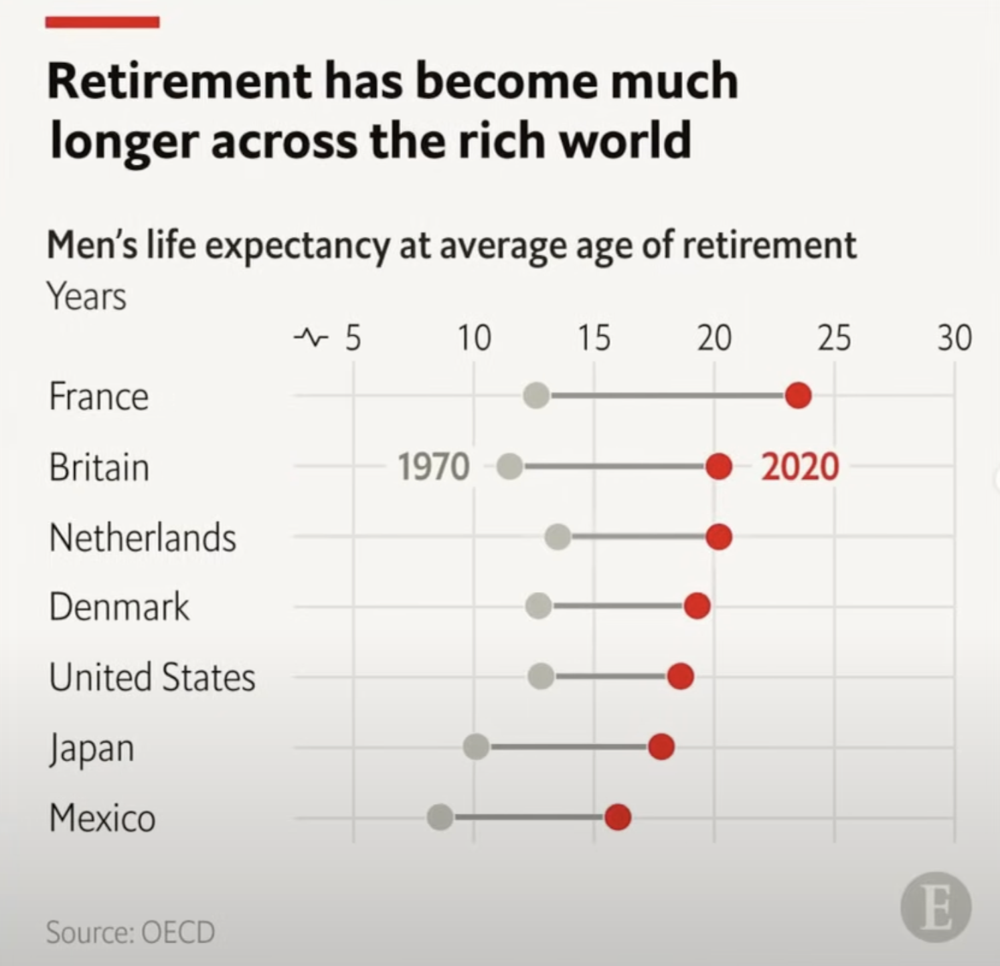

How to create an Economist-style chart with plotly
visualization
Author
Joram Mutenge
Published
October 29, 2024
When it comes to static visualizations you can use in print, no publication does a better job creating them than The Economist. That’s because their charts are simple, yet they manage to convey the relevant message contained in the data.
Many people focus on the chart’s aesthetics—how it looks to the human eye. In so doing, they neglect the message contained in the data, which they are supposed to convey to the audience.
I have no idea what software the data visualization analysts at The Economist use to create their charts. Regardless, I thought I should try recreating one of the plots using my favorite plotting library, Plotly.
Here’s the original chart from The Economist.

The Economist chart
Since I didn’t have the data to recreate this chart, I put together some fake department data about a company from one of my favorite TV shows, Suits. Below is the dataframe containing the data.
BG_COLOR ='#E9EDF0'RED ='#E3120B'GREY ='#5e5c64'fig = go.Figure()for i inrange(df.shape[0]): fig.add_trace(go.Scatter( x=[df["2023"][i], df["2024"][i]], y=[df["Department"][i], df["Department"][i]], mode='lines+markers', line=dict(color='#598080', width=4), # Thicker line marker=dict(size=16), # Bigger dots showlegend=False )) fig.add_trace(go.Scatter( x=[df["2023"][i]], y=[df["Department"][i]], mode='markers', marker=dict(color=GREY, size=16), # Bigger dots showlegend=False )) fig.add_trace(go.Scatter( x=[df["2024"][i]], y=[df["Department"][i]], mode='markers', marker=dict(color=RED, size=16), # Bigger dots showlegend=False ))# Update layout to customize appearancefig.update_layout( title="<b>Engagement score declined in<br>customer service & operations", title_font=dict(size=26), title_y=.9, plot_bgcolor=BG_COLOR, paper_bgcolor=BG_COLOR, height=600, margin=dict(t=180, b=80), xaxis=dict( side="top", # Move x-axis to the top tickfont=dict(size=18) # Increase the font size of the x-axis ticks ), yaxis=dict( tickfont=dict(size=16) ), shapes=[dict(type="line", xref="paper", yref="paper", x0=-0.16, y0=1.5, x1=0.022, y1=1.5, line=dict( color=RED, width=10 ) )])fig.add_annotation(dict( text="<b>2023", x=0.1, # x position (0 means far left) y=0.72, # y position (adjust as necessary) xref="paper", yref="paper", showarrow=False, # No arrow font=dict( size=22, # Font size color=GREY # Font color ), align="left" ),)fig.add_annotation(dict( text="<b>2024", x=0.6, # x position (0 means far left) y=0.72, # y position (adjust as necessary) xref="paper", yref="paper", showarrow=False, # No arrow font=dict( size=22, # Font size color=RED # Font color ), align="left" ),)fig.add_layout_image(dict( source=f"data:image/png;base64,{encoded_image}", xref="paper", yref="paper", x=.94, y=-0.18, xanchor="right", yanchor="bottom", sizex=0.22, sizey=0.22, layer="above" ))fig.add_annotation(dict( text="Source: Pearson Specter Litt", x=-0.14, # x position (0 means far left) y=-0.175, # y position (adjust as necessary) xref="paper", yref="paper", showarrow=False, # No arrow font=dict( size=14, # Font size color=GREY # Font color ), align="left" ),)fig.show(renderer="iframe")
Forget about the differences in the data used in my chart and that by The Economist and pay attention to the style. You’ll notice that they have the same style. This just shows how customizable Plotly is as a graphing library. You can customize any chat to your heart’s content.